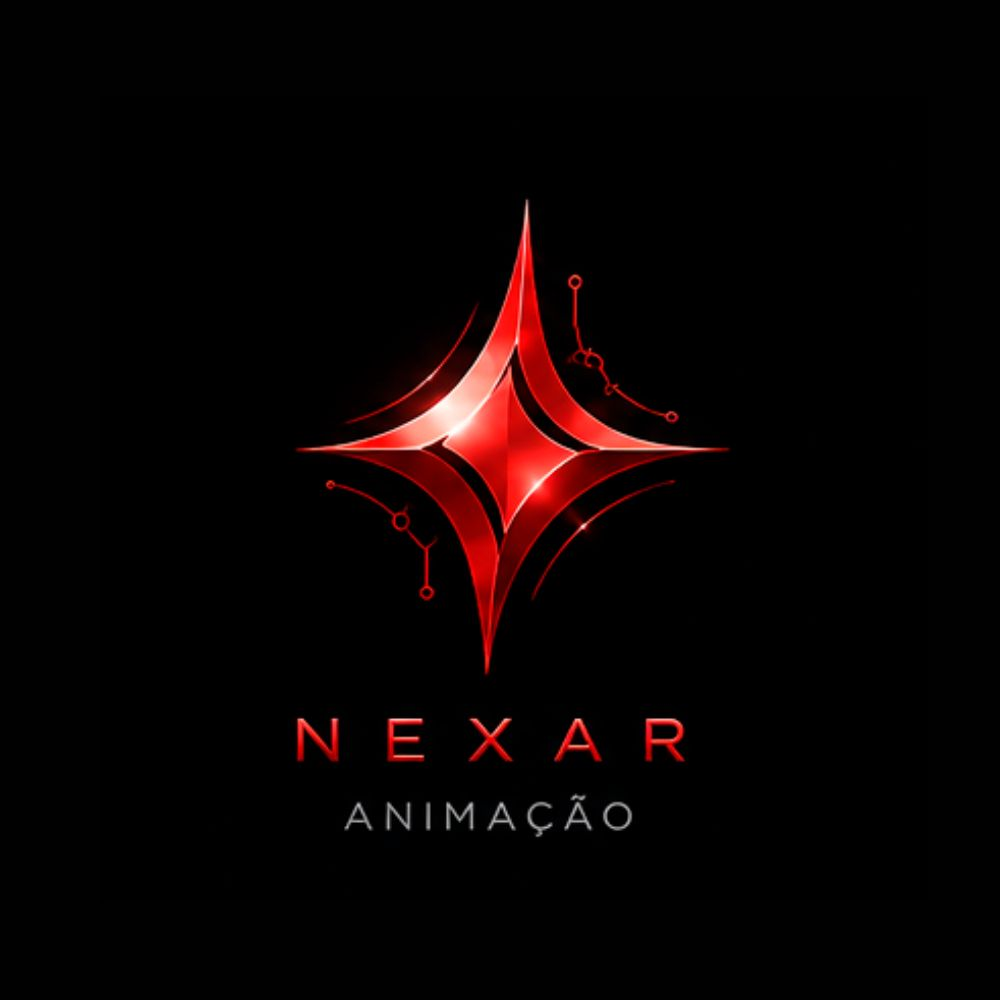

Módulo
NEXAR
Assets e Mundos Digitais
Layout projetado para a exposição de modelagens de cenários e malhas poligonais de personagens, orientados para performance em tempo real.
Game Assets
Modelos de alta performance otimizados via topologia.
Ambientes Virtuais
Construção digital de ecossistemas visuais massivos.